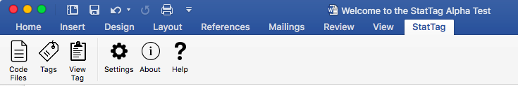
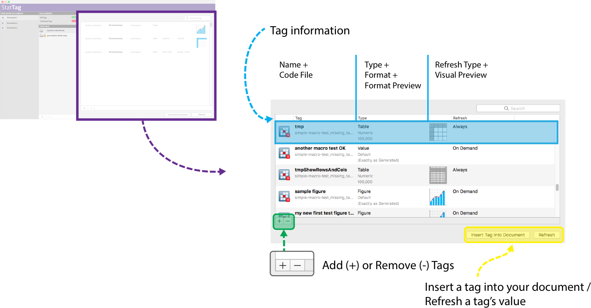
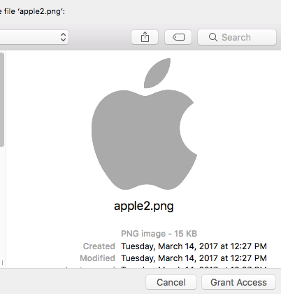
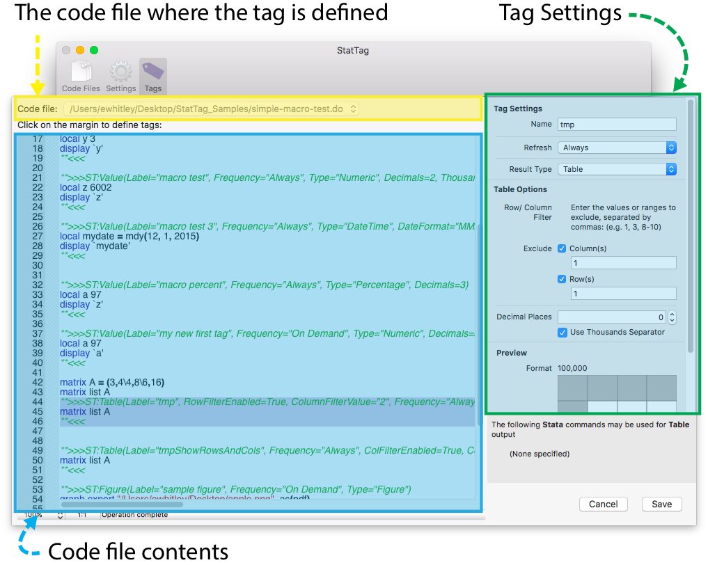

User’s Guide for macOS with Stata and R
Table of Contents
3.2 Navigating StatTag for macOS
3.3 Interacting with the StatTag for macOS interface
5.3 Formatting after insertion
Appendix A. Future Enhancements
1.0 Requirements
StatTag requires the following
· macOS 10.10 and above
· Microsoft Word 2016
· One or more supported statistical applications
o Stata 13 and above
o R
 Note: StatTag
should work with Microsoft Word 2011, but for this release we do not supply a
toolbar for more user-friendly integration.
Note: StatTag
should work with Microsoft Word 2011, but for this release we do not supply a
toolbar for more user-friendly integration.
2.0 Setup
StatTag can be installed by simply dragging and dropping the program in your Applications directory.
· Copy StatTag to your /Applications folder
· Install the StatTag Toolbar for Word
o Launch StatTag (StatTag will automatically launch Microsoft Word if it is not already running)
o On first launch, StatTag should prompt you to install a Word toolbar
o You will need to close and restart Word in order for the Word toolbar to activate
 Note: If you
should wish to remove or reinstall the toolbar for Word, you can do so from
within StatTag via the “StatTag” menu’s “Install Word Toolbar” and “Remove Word
Toolbar” options.
Note: If you
should wish to remove or reinstall the toolbar for Word, you can do so from
within StatTag via the “StatTag” menu’s “Install Word Toolbar” and “Remove Word
Toolbar” options.
3.0 Basics of StatTag
StatTag is user-friendly software that integrates statistical code with document preparation in Microsoft Word. StatTag facilitates reproducible research by connecting Word documents, such as a manuscript, to associated statistical code. Word documents prepared with StatTag are reproducible dynamic documents: statistical results in the document can be automatically updated if either statistical code or data change. In addition, StatTag allows statistical code to be edited directly from Microsoft Word.
StatTag will link any code file written for supported statistical applications with your Word document, run the code file from Word, and insert any tagged results.
There are three main steps to using StatTag:
1. Link code file(s). Connect a Word document to files containing statistical code (i.e. .do or .R file).
2. Create tags. Annotate the code files to tag results, tables, or figures that are of interest.
3. Insert tags. Instruct StatTag where to insert those results within the Word document itself.
Note: We recommend that you begin with a code file that already contains your working statistical code and generates the results of interest. With StatTag, it is possible to write your statistical code directly from Word, but not as convenient as writing your code files in the statistical program’s editor.
3.1 StatTag Elements
Microsoft Word Document
A Word document represents the “hub” for your team’s document authoring. Word provides the document formatting and editing tools.
Code File
A Code File is text file with commands that are intended to run in any of the supported statistical applications (currently Stata, R in the next release, possibly Matlab or other programs in future releases)). A code file is the source file that your project or study uses to compute findings from data sets. With StatTag, code files are “linked” to Microsoft Word documents so that they can be imported and used. The code files are read so that you can identify sections that produce output that you wish to embed in Word.
Tag
A Tag is a unit of statistical output from your Code File that you would like to treat as a unique, reproducible data element. Tags in your code file(s) identify numbers, tables, figures, or verbatim output (raw output from the statistical program console) that you would like to embed in your Word document.
A tag is defined by three components, which make up the “identity” for a tag:
· Code File: The source statistical code file where the tag is defined
· Tag name: The unique, user-friendly name for a tag
· Tag format: The combination of attributes that define how a tag’s output should be formatted within a Microsoft Word document
3.2 Navigating StatTag for macOS
StatTag for macOS performs the same functions as StatTag for Windows, but with a user interface more consistent with macOS. There are fewer buttons, but all of StatTag’s core capabilities.
The StatTag Word Toolbar (Word 2016)
We suggest installing the StatTag toolbar for Microsoft Word. It makes interaction with StatTag easier and more reliable. The StatTag toolbar has two groups of buttons which provide quick access to key functions
Core Functions
|
|
Code Files |
Opens the Code Files panel. See “Code Files” below. |
|
|
Tags |
Opens the Tags panel. See “Tags” below. |
|
|
View Tag |
After selecting a Tag, clicking on this icon will open the Tag definition editor. See “Tag Editor” below. |
Utilities
|
Settings |
Opens the Settings window. See “Settings” below. |
|
|
|
About |
Opens the About window. Provides basic information about StatTag as well as links to the StatTag team’s email address and GitHub repository. |
|
Help |
Opens StatTag’s help documentation |

The StatTag Application Interface
In addition to the Word Toolbar, StatTag installs as an independent application, with its own interface. The interface organizes four panels.
|
Word Document Browser |
Displays a list of documents currently open in Microsoft Word. |
|
|
|
|
Tag Summary Dashboard |
Provides an overview of the active Word document’s tags. |
|
|
|
|
Document Code File Manager |
Lists the code files associated with your active Word document. |
|
|
|
|
Activity Panel |
An interface to insert tags, work with existing tags, and remove tags from the active Word document. |

3.3 Interacting with the StatTag for macOS interface
Word Document Browser
All Microsoft Word documents currently open on your computer will be displayed here. Clicking on a Word document will activate it in StatTag, loading all code files and associated tag information in the other panels.

Tag Summary Dashboard
This panel will show summary information for any tags in the active Word document. It will display any of three options, depending on what is in your document:
· “All Tags” – A count of the active tags available from code files linked to your Word document. Clicking on “All Tags” will open a list of all Tags currently available for use in your Code Files.
· “Unlinked Tags” – Tags which are used in your Word document, but which are not found in any of the linked code files. Clicking on “Unlinked Tags” will open a list of the tags which are in your Word document, but cannot be found in your project’s accessible Code Files.
· “Duplicate Tags” – Any tag names that are reused within the same code file. Clicking on “Duplicate Tags” will open a list of Tag names which are duplicated either within or across your Code Files. See “Duplicate Tags” below.

Document Code File Manager
This panel will show any code files currently linked to you active Word document.
You can:
· View a list of code files currently associated with your document
· Attach or remove code files using the macOS-standard (+) and (-)(delete) buttons
· Attach or remove code files by dragging/dropping code files into the StatTag code file list from Finder

Activity Panel
Clicking on a code file or selecting multiple code files will cause the Activity Window to display tags associated with the selected code file(s). From the activity panel, tags can be managed (define, add, remove), insert, and refresh tags.
3.4 Managing Tags
The activity panel will become active when a code file is selected or the “All Tags” option is selected in the Tag Summary panel. Selecting one or more code files will filter the list of displayed tags.
Adding Tags
1. Activate the Tag panel by clicking on a Code File or selecting All Tags
2. Click on the add (+)(⌘+) button.
3. To modify the definition of a tag, simply double-click on the tag
Information on adding tags is described in greater detail in the following section.
Removing Tags
1. Activate the Tag panel by clicking on a Code File or selecting All Tags
2. Click on the remove (-)(delete) button.
3. To modify the definition of a tag, simply double-click on the tag
Inserting Tags
1. Select one or more tags in the tag list. (To select multiple tags hold the (shift) key while clicking and selecting a range of tags)
2. Click on the “Insert Tag into Document” button.
3. You will see a progress bar while the tags process and, finally, feedback if there were issues.
Refreshing Tags
1. Select one or more tags in the tag list. (To select multiple tags hold the (shift) key while clicking and selecting a range of tags)
2. Click on the “Refresh” button.
3. You will see a progress bar while the tags process and, finally, feedback if there were issues.

Inserting Figure Tags (Microsoft Word 2016)
When inserting figure tags, Microsoft Word 2016 will prompt you to allow it access to the related figure graphic. This is by design. Microsoft Word 2016 for macOS uses a security technology known as the “Apple Sandbox.” It is designed to help protect users and prevents applications from arbitrarily accessing files on the user’s computer.
When StatTag asks Microsoft Word 2016 to insert a figure / image, the Apple Sandbox obligates Word to first obtain permission to access the image on user’s computer. Apple’s security system asserts itself as a “stop sign” before allowing Word to proceed.
Word will notify the user of the request and ask that they authorize access to the file:

Once you click on the image and hits the “Select” button, a window will open and the requested file will be presented. You must then click “Grant Access” to allow Word to insert the image.

This is done once per file. After the user has authorized Microsoft Word to access a file, that decision is stored for future use. Subsequent requests to access that file from within Microsoft Word are automatically approved. If a figure is refreshed or another code file references the same file, the no further approval is required.
Unlinked Tags
Tags can become “unlinked” if the statistical code is unlinked from the Word document, or if the statistical code is edited outside of StatTag and the notations are modified. For example, code could become unlinked if the code file (.do or .R) is moved to new location without changing the code file path in StatTag.
Understanding Unlinked Tags
When a tag is “unlinked,” it means that StatTag can no longer connect a field from within the Word document to a tag in a code file. This presents a risk to the veracity of the document. As code files change or other findings within the document are updated, these “unlinked” tags will be frozen in time and no longer kept in sync with other findings. Additionally, unlinked tags preclude the ability to capitalize on one of the central reproducibility features of StatTag – insight into the source of the data element from the published finding. Readers can no longer click on a field and view the code that was used in its generation.
There are two scenarios that can lead to an Unlinked Tag
1) Inaccessible Code File
a. If a tag was inserted into the Word document, but the related source code file is no longer accessible, the tag is considered “unlinked” as its definition cannot be accessed
2) The tag’s definition is no longer accessible within a Code File
a. If a tag was inserted into the Word document, but has since been removed from a code file (or the tag name removed or changed outside of StatTag), the field in the Word document cannot be linked to a given tag
Resolving Unlinked Tags
StatTag will detect Unlinked Tags and alert users to them within the Tag Dashboard. Users can then take one of a few actions.
· Act on the code file and all related tags
o Link to a Different Code File. Link a missing code file to a new location. This will relink all related tags found in Microsoft Word to the new code file.
o Remove Unlinked Tags from Word Document. Remove all of the Code File’s unlinked tags from the Microsoft Word document. Existing Microsoft Word fields will be updated to reflect a “[REMOVED]” placeholder for easier visual identification.
· Act on an individual tag
o Link to a Different Code File. Identical to the code file action, except limited to this individual tag.
o Remove Unlinked Tag from Word Document. Identical to the code file action, except limited to this individual tag.

Duplicate Tags
StatTag relies on a tag’s code file and name to create a unique identity. If two tags share the same name within the same code file, StatTag cannot differentiate them when communicating between a code file and Microsoft Word. StatTag refers to this name reuse as a “duplicate” tag.
Understanding Duplicate Tags
There are two kinds of duplicate tags:
1) Name reused within the same code file.
a. For a single code file “my code file.do” we have
i. A tag named “My Important Finding” (number, linked to lines 1-10)
ii. A tag named “My Important Finding” (date, linked to lines 98-99)
2) Name reused across separate code files.
a. Code file “my code file.do” we have
i. A tag named “An Incredible Result” (number, percent, linked to line 25)
b. Code file “my other code file.do” we have
i. A tag named “An Incredible Result” (number, percent, linked to line 33)
Duplicate tags within the same code file must be changed. Duplicate tags within the same code file will cause an error and StatTag will stop completely.
Duplicate tags across two different code files are treated as warnings because they are potentially confusing. It is strongly suggested you change one of the tag names if possible.
Resolving Duplicate Tags Within StatTag
Duplicate tags will be automatically detected by StatTag and then listed on the Tag Dashboard. Clicking on the “Duplicate Tags” dashboard item will load the details in the main activity panel.
To resolve a duplicate tag:
1) Click on “Duplicate Tags” in the Tag Dashboard
2) The activity panel will display the details of the duplicate tags, grouped by the related code file(s). You can click on the eye icon to “peek” at the code and quickly review the tag.
3) Double-click on one of the tags to open the tag editor
4) Rename the tag in the tag editor and then save
Review the duplicate tags by selecting “Duplicate Tags” in the Tag Dashboard

Do a quick inspection of the tags by “peeking” at an individual tag’s code.

One you have selected a tag you wish to rename, double-click the tag in the list to open the Tag Editor. Provide a new name and save the tag.

4.0 Defining Tags
4.1 Structure
A Tag is a unit of statistical output from your Code File that you would like to treat as a unique, reproducible data element. Tags in your code file(s) identify numbers, tables, figures, or verbatim output (raw output from the statistical program console) that you would like to embed in your Word document.
A tag is defined by three components, which make up the “identity” for a tag:
· Code File: The source statistical code file where the tag is defined
· Tag name: The unique, user-friendly name for a tag
· Tag format: The combination of attributes that define how a tag’s output should be formatted within a Microsoft Word document
Tag names should be unique within code files and, ideally, unique across the document (although the latter is not required, it’s suggested to avoid potential confusion and so that it’s easier for users to quickly identify tags). Four types of results can be tagged.
|
Type |
|
 |
|
Numeric Values |
display |
Any command that returns a value |
|
Tables |
matrix list |
Any command that returns a data frame, matrix, vector or list |
|
Figures |
graph export |
pdf, win.metafile, png, jpeg, bmp, postscript |
|
Verbatim |
Any Code |
Any Code |
In order to return results from your statistical analysis to Word, your results must be created and either printed to the results window of your statistical program or to file through one of the above commands, and encapsulated in a tag. Other lines in your statistical code should not be encapsulated by tags, as they may cause errors.
Values
Values are returned to StatTag and then inserted into Word with the display (Stata) command or R commands that return a number. The display command is used in Stata code to print strings or scalar values to the results window. This command will not return data in any other format, such as a matrix or table.
 The
display
command is typically used in Stata code with the return command to retrieve
stored results, or with local or global macro variables.
The
display
command is typically used in Stata code with the return command to retrieve
stored results, or with local or global macro variables.
 R
commands that return a single value (e.g., print) may be used. If
the value returned has more than one element (such as a vector), only the first
element will be used.
R
commands that return a single value (e.g., print) may be used. If
the value returned has more than one element (such as a vector), only the first
element will be used.
Tables
Tables are returned to Word with the matrix list (Stata) command or R commands that return a collection of values.
 The
matrix list
command is used in Stata code to print a matrix to the results window. The matrix list
command is typically used after creation of a matrix with the mkmat, matrix define, estout,
or estimates
table commands.
The
matrix list
command is used in Stata code to print a matrix to the results window. The matrix list
command is typically used after creation of a matrix with the mkmat, matrix define, estout,
or estimates
table commands.
 R
commands that return a collection of values (data frame, matrix, vector, or
list) can be used as table results by StatTag.
R
commands that return a collection of values (data frame, matrix, vector, or
list) can be used as table results by StatTag.
Figure
Figures are returned to Word with the graph export (Stata) command or common file format commands other than pdf (R).
 The
graph export
command is used in Stata code to save a graph or figure to file outside of
Stata, the location of which is specified by the user. StatTag will retrieve
the file to insert into Word. The graph export command expects a pathway and file
name to be specified along with the file format, and the replace option to
overwrite an existing file as required. The command will export the last graph
rendered in Stata.
The
graph export
command is used in Stata code to save a graph or figure to file outside of
Stata, the location of which is specified by the user. StatTag will retrieve
the file to insert into Word. The graph export command expects a pathway and file
name to be specified along with the file format, and the replace option to
overwrite an existing file as required. The command will export the last graph
rendered in Stata.
 The
win.metafile, png, jpeg, bmp and postscript commands are used by R to save a
graph or figure to a file outside of R, the location of which is specified by
the user. StatTag will retrieve the file to insert into Word. StatTag cannot
currently return a document generated with pdf.
The
win.metafile, png, jpeg, bmp and postscript commands are used by R to save a
graph or figure to a file outside of R, the location of which is specified by
the user. StatTag will retrieve the file to insert into Word. StatTag cannot
currently return a document generated with pdf.
Verbatim
Verbatim results echo any printed output within the statistical program. Inserted output will be formatted text in a text box. The inserted text may be further formatted in Word.
 Tagging
code as verbatim in Stata will result in the insertion of any output printed to
the Stata results screen.
Tagging
code as verbatim in Stata will result in the insertion of any output printed to
the Stata results screen.
 Tagging
code as verbatim in R will result in the insertion of any output printed to the
R console.
Tagging
code as verbatim in R will result in the insertion of any output printed to the
R console.
4.2 Syntax
A tag always starts with **>>>ST:Value(Label=" ", Frequency="",…) and may contain additional information based on the type of tag (number, table, or figure) it identifies. The tag always ends with **<<<. Examples of tags for a numeric value, a table, a figure and verbatim output are listed below.
**>>>ST:Value(Label=" ", Frequency="", Type="")
code
**<<<
**>>>ST:Table(Label="", Frequency="", Type="", AllowInvalid=True, Decimals=0, Thousands=False)
code
**<<<
**>>>ST:Figure(Label="", Frequency="")
code
**<<<
**>>>ST:Verbatim(Label="", Frequency="")
code
**<<<
If tags are made through StatTag, the text (“***>>> …. **<<<”) will be written into your statistical code by the plug-in. The Label, Frequency, Type and Table parameters are inserted with the opening and closing tags by StatTag. For the more advanced user, you can also directly write tags into your statistical code. If written by hand in the statistical code, you must write both the opening and closing tags, and provide a tag name for each tag.
 Note: Tags
cannot be nested within each other. A tag should encapsulate exactly one keyword
command (i.e. display,
matrix list,
etc.)
Note: Tags
cannot be nested within each other. A tag should encapsulate exactly one keyword
command (i.e. display,
matrix list,
etc.)
4.3 Tag Editor
The tag editor drives interaction with StatTag. It is where tag are defined within a referenced code file and information is added to enable StatTag to link output to your Microsoft Word document.
There are three steps to defining a tag:
1. Choose a code file
a. Let StatTag know where this tag should be defined. You will be able to choose any of the accessible code files you have already linked to your document.
2. Select the block of code within your code file where the tag should obtain data
a. Once a code file is selected, its contents should appear in the code editor
b. Click on the margin and highlight the block you wish to use to for your tag
3. Define your tag’s settings, these drive how the result is formatted when your statistical findings are emitted to the Microsoft Word document
a. Provide a tag name. The tag name is used by StatTag to help you manage tags and has no impact on the formatted results in Word. The name must be unique within the selected code file.
b. Choose a result type. This is the way you’d like StatTag to understand the data coming back from your statistical program. StatTag will accept values, figures and tables.

 Note: saving a
tag will cause StatTag to refresh the tag and all associated values within your
Microsoft Word document.
Note: saving a
tag will cause StatTag to refresh the tag and all associated values within your
Microsoft Word document.
5.0 Formatting Tags
When a tag is created, its format should be specified accordingly. Options may be selected for either Values or Tables. There are no formatting options for Figures or Verbatim.
5.1
Values
Values can be formatted by default (per the exact statistical output), as a number with a specific number of decimal places, as a date/time combination, or as a percentage with a specific number of decimal places. Formatting is selected from the drop down list.
5.2 Tables
 Matrices and tables are inserted to Word through StatTag
using different mechanisms depending on the statistical software used. In all
cases, data are formatted using OpenXML prior to being inserted. Where data are
blank or missing, a “.” is returned in the particular cell.
Matrices and tables are inserted to Word through StatTag
using different mechanisms depending on the statistical software used. In all
cases, data are formatted using OpenXML prior to being inserted. Where data are
blank or missing, a “.” is returned in the particular cell.
Currently, if any formatting is specified, the formatting is applied to the entire table. Formatting options include specification of the number of decimal places and inclusion of a comma separator for thousands places, which will be applied to all numerical data in the table.
Once inserted to Word, the dimensions (rows and columns) of a table should not be modified by removing or adding columns, as this will cause errors when updating the results. If you change the dimensions of a table, you should delete the table from Word and insert the table again. StatTag allows flexibility in importing tables to exclude rows and columns by number. Using these options, the headers, row names, or specific variables and data can be excluded.
 Tip: Data from
individual cells in an inserted table can be copied elsewhere within the Word
document text, and will retain their linkage to the original data. For example,
if you wished to include a p-value in the text, copy the result from the table
and paste into the text. When the table is updated, the value in the text will
be updated as well.
Tip: Data from
individual cells in an inserted table can be copied elsewhere within the Word
document text, and will retain their linkage to the original data. For example,
if you wished to include a p-value in the text, copy the result from the table
and paste into the text. When the table is updated, the value in the text will
be updated as well.
5.3 Formatting after insertion
Once inserted, values and tables can be formatted using Word text formatting options, such as changing fonts, bolding, or italicizing. Updating the tags will not affect the applied formatting in Word.
Tags can also be copy and pasted, or cut and pasted to other parts of the text, and will retain their linkage to the statistical code. If your tag is copied or inserted in multiple locations, updates within your statistical code will update every instance of the tag within your text.
Tags can be deleted from the text. Deleting the tag from the text will not delete the tag syntax within your statistical code. To delete the syntax, use the “Remove tags” option in the Manage Tags dialog box.
6.0 Troubleshooting
Resolving Code Files with Inaccessible Paths
StatTag will alert you to inaccessible code files (broken paths). In order to re-link a code file to its updated path you should simply click on the “missing” code file in your code file list. StatTag will provide you the opportunity to re-link to a code file of your choosing. Additionally, you might also choose to remove (-)(delete) the code file then add (+) it back to your document.
Supported File Extensions
StatTag uses vendor-provided file extensions to determine which files are “code” files. If your statistical code files do not use the standard file extensions set by the vendor, you will not be able to add them to StatTag.
|
Statistical Package |
Supported file extension(s) |
|
Stata |
.do |
|
R |
.r |
If StatTag Doesn’t Perform as Expected
You may find that StatTag doesn’t perform as expected. Here are a few common scenarios and approaches to resolving them. If these don’t work for you, please let us know and we will address your question as soon as possible.
A tag displays [NO RESULT] instead of a value
1. Test your code in the statistical package directly (outside of StatTag). See if your code runs or if there are messages that indicate an issue.
2. If your code does run outside of StatTag, check to make sure you’re referencing the correct tag type for your output. If you are emitting a matrix, for example, have you selected a “table” tag output type?
3. Has the tag output type changed dramatically since it was initially defined? In particular, have you changed between a single value and table? Radical changes in tag definition may require you to delete and reinsert a tag.
4. It’s possible we haven’t implemented the package-specific syntax used in your code file. Let us know the command(s) you used (no sensitive data, please!) so we can add it to the enhancement list.
StatTag doesn’t show the correct code files or tags
It’s possible that StatTag doesn’t show the correct code files or tags if you make manual changes to code files outside of StatTag. This is because StatTag is not yet monitoring code files for real-time changes outside of the application. To resolve, go into StatTag and toggle between active Microsoft Word documents. This will cause StatTag to reload code files related to the selected document.
Help
StatTag provides two options for help, both of which can be found under the “Help” menu.

StatTag Help
The core content from this document can be found under the “Help” menu. It provides an overview of StatTag’s key concepts and the basic steps to get started.

Downloading StatTag Samples
StatTag provides sample code files for several statistical applications as well as sample Microsoft Word documents to demonstrate their use. The samples are stored online and distributed via GitHub (https://github.com/StatTag/Simple-Code-Examples).
Users can download and extract these sample files from directly within StatTag.

1. Ensure your computer is connected to the Internet.
2. Select “Download Latest StatTag Samples” from the “Help” menu.
3. Review the location where the samples will be downloaded. By default this is your “Downloads” directory. You may change this location to any folder you can access.
4. Click “Install Samples”
Preferences
Preferences consist of the ability to:
· Enable and manage debug logging - You can turn on debug logging to capture information that will be assist the StatTag developers in trouble-shooting issues you may experience.
o Enable debug logging
o Set a debug log file path

7.0 Acknowledgements
Appendix A. Future Enhancements
Some features are not yet fully implemented
This is a very early test version of StatTag. Some features are incomplete or not yet implemented.
· Word Toolbar (Microsoft Word 2011)
o The toolbar for Word 2011 is not supported
· Tag Management
o “Always” Refresh Tag
§ Not yet implemented. Tags must be manually refreshed and will not auto-refresh when a document is opened in Word
· Logging
o Currently logging minimal information
StatTag for macOS supports Stata and R only
There is no macOS-compatible version of SAS that supports integration with 3rd party applications.
StatTag may not function correctly if more than one instance of Microsoft Word is running
On macOS it is possible to run both Microsoft Word 2011 and Microsoft Word 2016 at the same time. In this case StatTag will not necessarily know which you intended to use. Both may be installed, but only one should be actively running if you wish to use StatTag.
You can disrupt StatTag by interrupting document updates in Word
On the macOS version of StatTag it is not possible to disable access to Microsoft Word while a document is being updated. Should a document be modified or closed while StatTag is inserting or updating tags, undesirable issues may occur. Users should refrain from interacting with the active Microsoft Word document until StatTag is finished inserting or updating tags.
Native Stata dates are not properly interpreted
Currently, “native” (non-formatted) dates are not properly interpreted by StatTag. If you wish to use a Stata-based date in StatTag you may format it as a string and tag it as a StatTag “date” tag. StatTag should then be able to properly utilize the date in your Word document.
Accessing StatTag code files or tags from the Microsoft Word toolbar may be slow
You may see the macOS “spinning beach ball” due to slow performance when accessing StatTag’s code files or tags from the Microsoft Word toolbar. This will be resolved in subsequent releases.
Launching StatTag launches Microsoft Word
Currently, launching StatTag will cause Microsoft Word to launch if it is not already running. This will be addressed in subsequent releases.
While StatTag is working, you will see the screen update in Microsoft Word
During tag inserts and updates you will see the screen refresh as StatTag moves from tag to tag to update values. This is due to the way Microsoft Word functions on macOS.
When StatTag communicates with Stata, Stata will come to the foreground
On macOS, when StatTag runs a code file in an external statistical program such as Stata, that external application will launch and come to the foreground of the user’s desktop. This is by design. By default, Apple security policies cause external applications to become visible when asked to do work. When StatTag requests other applications run a code file, those applications must visibly launch.